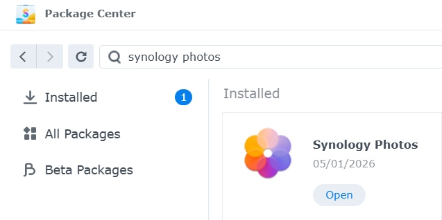
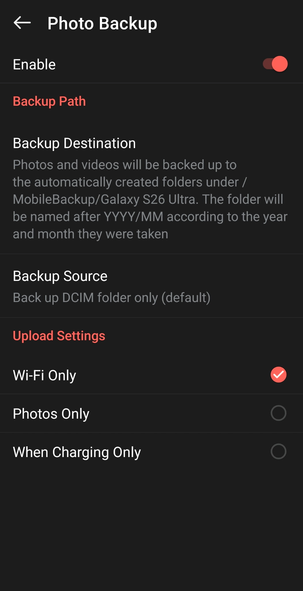
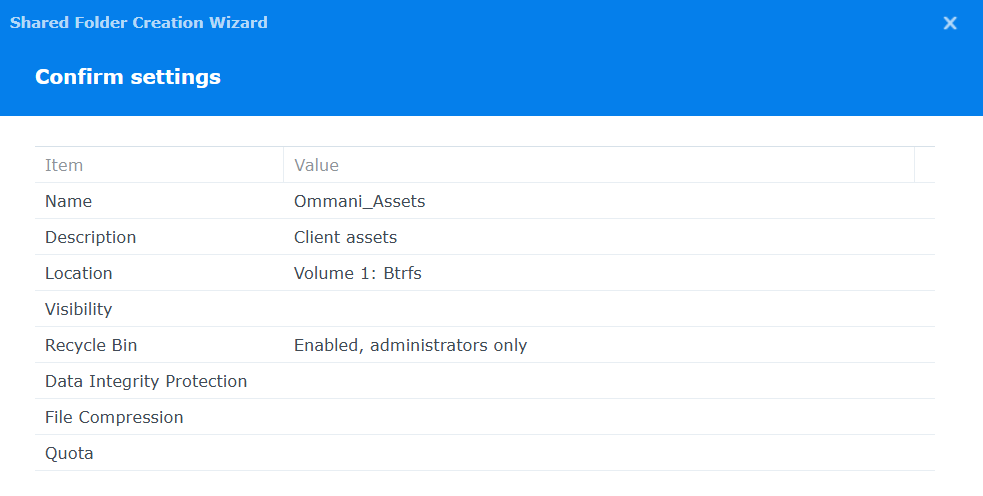
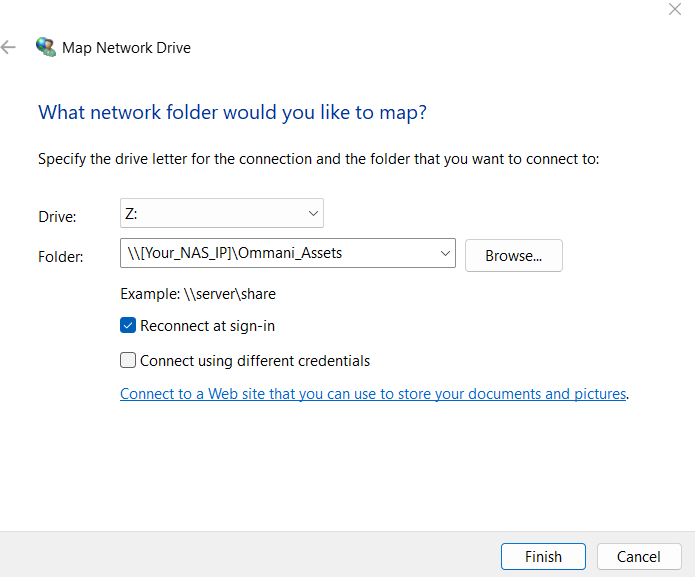
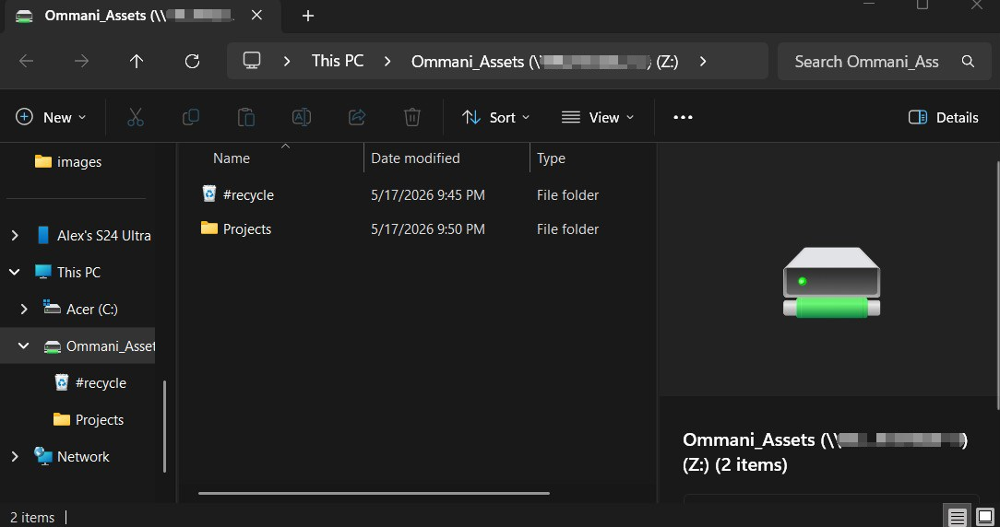

Setting Up a Synology NAS for Family Photos (And Design Assets)
Every parent and digital hoarder knows the underlying anxiety of seeing a "storage full" notification. Between ten years of family photos, because yes, I absolutely need forty-seven consecutive pictures of the kids playing in the yard, and gigabytes of UI design files for Ommani Collective, I was running out of space and tempting fate.
I didn't want to pay a monthly cloud subscription fee for the rest of my life, nor did I want to trust third-party servers with my family memories and client assets. The solution? Bringing it all in-house.
Here is how I set up our Synology NAS to act as a private, automated cloud for our photos and design files.
The Loadout (Hardware Requirements)
If you read my guide on hosting game servers, you'll recognize this setup. The beauty of a NAS is that it can handle multiple jobs at once.
- The NAS: Synology DS255+ (Jedi_Archives)
- Storage (The Most Important Part): I am running two 12TB IronWolf Pro drives. When setting up the storage pool in Synology, I specifically configured these as a mirror backup (SHR/RAID 1). This means whatever saves to Drive 1 is instantly copied to Drive 2. If one of these hard drives ever physically fails, I won't lose a single photo. Complete redundancy is the whole point of doing this!
Step 1: Install Synology Photos
Synology has a built-in package that functions incredibly similarly to Google Photos or Apple iCloud, but it lives entirely on your own server.
- Log into your NAS and open the Package Center.
- Search for Synology Photos and click Install.
- Once installed, it will automatically create a
photofolder in your File Station. This is where all your backed-up images will live.

Step 2: Automate Your Mobile Backups
The real magic happens when you never have to think about backing up your phone again.
- Download the Synology Photos app on your phone (I run it on my Galaxy S24 Ultra, but it works perfectly on iPhones, too).
- Log into the app using your QuickConnect ID or local NAS IP address.
- Go to Settings > Photo Backup and turn it on.
- You can configure it to only back up when you are connected to Wi-Fi so it doesn't eat your data plan. Now, every time I walk through my front door, any new pictures of the kids instantly sync to Jedi_Archives.

Step 3: Secure the Ommani Collective Assets
While Synology Photos is great for family albums, I needed a separate, organized space for my UI design coursework and Ommani Collective client assets. I do not want my wireframes mixing with pictures of the boys.
- Open Control Panel on your NAS and go to Shared Folder.
- Click Create and name it something like
Ommani_Assets. - Set your permissions so only your user account has read/write access.
- Pro-Tip: You can map this shared folder directly to your computer. On Windows, open File Explorer, right-click "This PC," and select "Map network drive". Type in
\\[Your_NAS_IP]\Ommani_Assets. Now, it acts exactly like a local folder on your computer, but everything is safely stored and mirrored on the NAS.



The Peace of Mind
Setting this up took an afternoon, but the relief is permanent. No more deleting old files to make room for new ones, no more worrying about losing ten years of memories if a phone gets dropped in a lake, and no more recurring cloud storage fees.